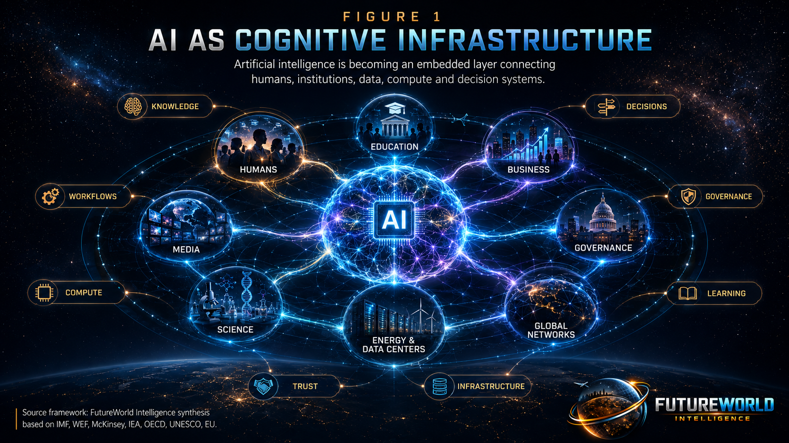
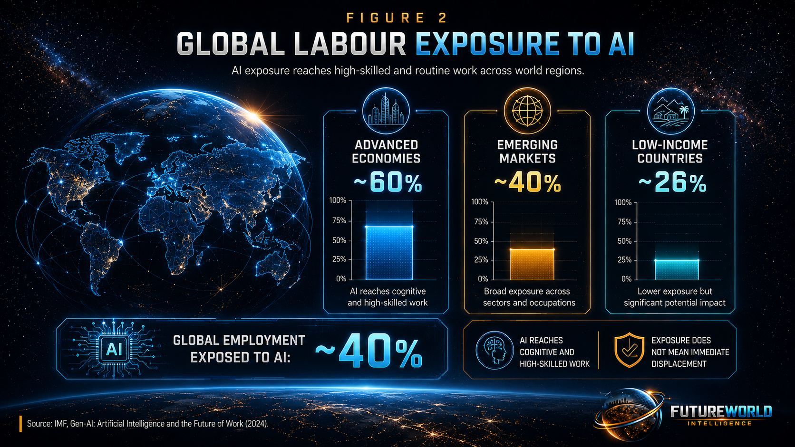
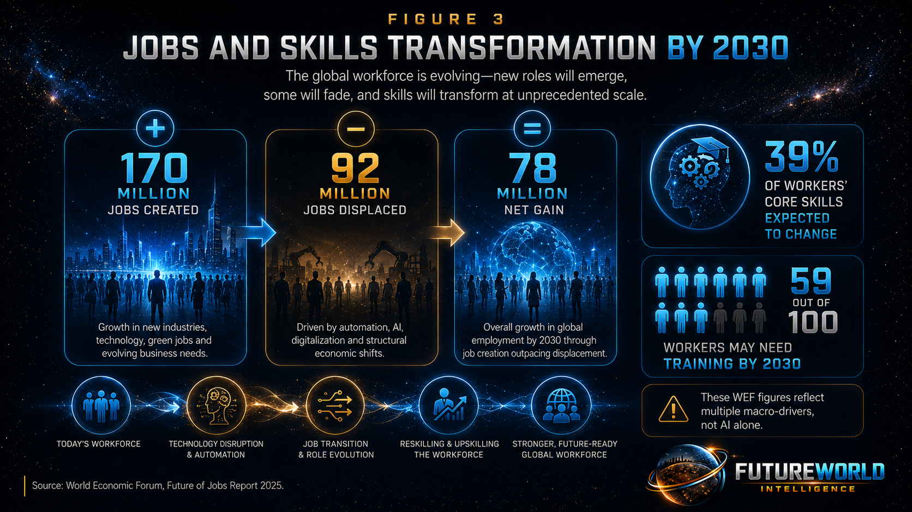
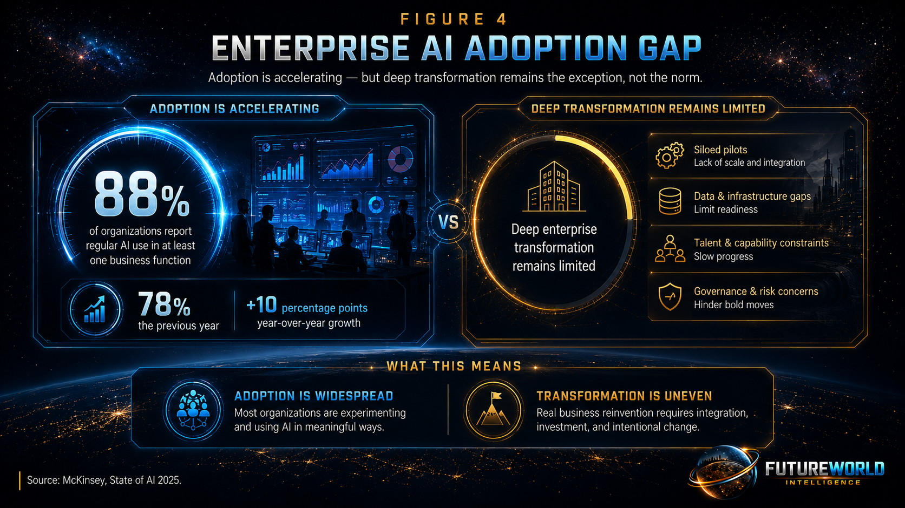
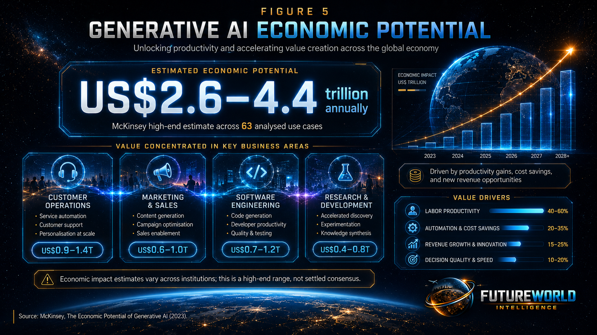
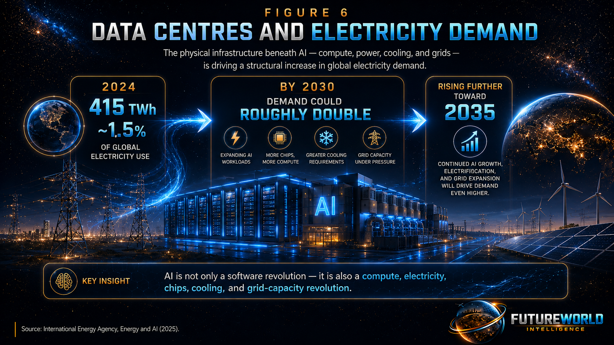
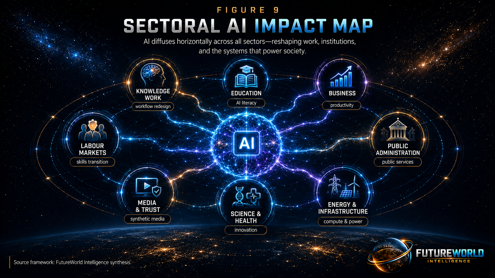
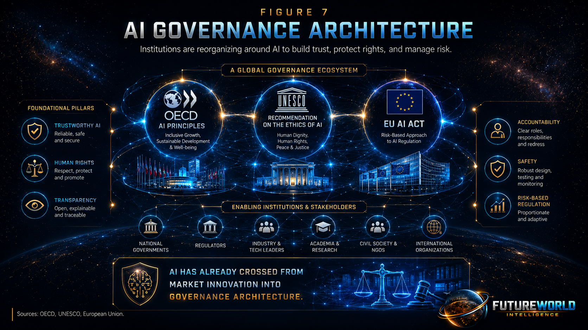
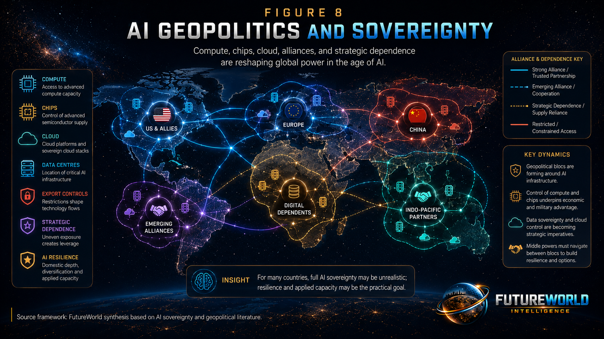
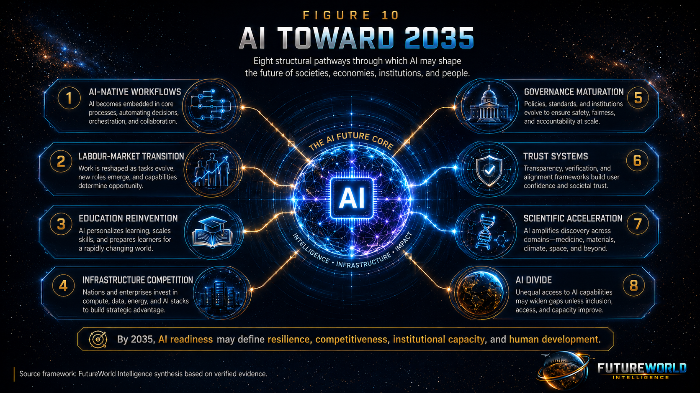

Document Control and Responsible Use Statement
This report is prepared for educational, policy-briefing, and public-intelligence purposes. It is intended to inform policymakers, public-sector officials, researchers, students, civil-society organizations, educators, and strategic planners about the evidence base supporting the claim that artificial intelligence is shifting from a discrete digital tool into a form of global cognitive infrastructure.
This report is not legal, financial, investment, military, or procurement advice. It does not represent the official position of any government, multilateral institution, university, corporation, or research body named within it.
The report is based on a structured evidence-review approach. Quantitative claims are drawn from primary institutional sources wherever possible, including the International Monetary Fund, World Economic Forum, McKinsey & Company, International Energy Agency, OECD, UNESCO, and the European Union, supplemented by peer-reviewed and academic literature. Where estimates diverge, the report presents ranges and limitations rather than treating a single number as settled consensus.
Methodology Statement
- Source identification: Claims and statistics were drawn from primary institutional sources wherever possible, supplemented by peer-reviewed academic literature and carefully labelled policy analysis.
- Verification: Every quantitative claim carried over from the original draft was checked against the cited institution’s original publication or official communication.
- Triangulation: Where independent estimates diverge, this report presents the range and flags the divergence rather than citing a single number as settled fact.
- Recency: Sources are dated, and newer institutional updates are used where they supersede earlier figures.
- Limitations disclosure: The report states explicitly which claims are well-evidenced, which are contested, and which are projections rather than observations.
Corrections Applied to the Earlier Draft
- The World Economic Forum figures of 170 million jobs created, 92 million displaced and net 78 million by 2030 are correctly attributed to the Future of Jobs Report 2025, but they describe combined macro-drivers, not AI in isolation.
- The IEA data-centre electricity figures have been updated to reflect the most recent published trajectory available in the working draft, including 415 TWh in 2024, an approximate doubling toward 2030, and continued growth toward 2035.
- The McKinsey 88-percent enterprise AI adoption figure is retained, but this report also emphasizes the adoption-versus-transformation gap: widespread use does not automatically mean full-scale organizational redesign.
- The McKinsey US$2.6–4.4 trillion generative-AI economic-value estimate is presented as a high-end estimate within a contested forecasting landscape, not as a single settled consensus.
- The OECD, UNESCO and EU governance references are treated as institutional evidence that AI has crossed from a market phenomenon into a governance architecture.
Executive Summary
Artificial Intelligence is one of the principal forces shaping the global future toward 2035 because it has moved beyond software automation, search, chatbots, and experimental digital tools. It is becoming a general-purpose cognitive capability embedded across knowledge work, education, public administration, science, media, energy systems, national security, enterprise productivity, and international competition.
The central argument of this report is that AI is no longer only a digital tool. It is becoming cognitive infrastructure: an embedded layer through which societies search, write, reason, code, learn, translate, design, decide, govern, communicate, and organize knowledge.
Three lines of evidence support treating AI as an infrastructural and future-shaping phenomenon. First, AI reaches labour and skills systems at global scale. Second, AI adoption has crossed from experimentation into mainstream organizational use, even though deep enterprise transformation remains uneven. Third, AI’s cognitive and economic effects rest on a measurable physical foundation: compute, chips, data centres, cloud infrastructure, electricity, cooling, grids, water, and cybersecurity.

AI has also triggered institutional transformation. The OECD AI Principles, UNESCO Recommendation on the Ethics of Artificial Intelligence, and European Union Artificial Intelligence Act show that governments and international bodies are reorganizing around AI as a distinct governance object. A technology becomes a future-shaping force when institutions build dedicated rules, standards, accountability systems, and governance architectures around it. AI has already crossed that threshold.
1. Core Thesis: Why Artificial Intelligence Qualifies as a Future-Shaping Force
Artificial Intelligence qualifies as a global future-shaping force because it changes the method by which societies process information, produce knowledge, automate tasks, and scale decision-making.
Earlier general-purpose technologies mechanized physical labour, accelerated communication, digitized information, or connected people through networks. AI extends this lineage but differs in kind. Contemporary AI systems do not only store or transmit information. They interpret information, generate knowledge-like outputs, classify patterns, produce content, assist reasoning, support coding, and increasingly coordinate multi-step tasks through agentic systems.
AI is therefore not simply a faster tool. It is a new layer in the knowledge-production system.
AI changes how people learn, write, code, analyse, design, research, communicate and make decisions.
AI changes productivity, business models, labour demand, workforce skills, enterprise competition and value creation.
AI changes governance, regulation, public services, education, law, security systems, geopolitics and infrastructure planning.
A useful test for any claim that a technology is future-shaping is whether its effects have moved beyond technical performance into the reorganization of human systems. By this test, AI has already crossed the threshold. It is affecting knowledge work, education, enterprise operations, public administration, media ecosystems, scientific research, energy systems, labour markets, and international governance.
The future will not be shaped only by who possesses land, natural resources, industrial capacity, or military power. It will also be shaped by who controls compute, data, models, chips, electricity, digital infrastructure, skilled human capital, and AI governance systems.
2. Literature Review: Artificial Intelligence as Global Cognitive Infrastructure
The phrase “AI as cognitive infrastructure” should not be treated as a slogan. It is an emerging conceptual framework found in academic, policy, economic, and critical literature. It describes a transition from AI as a discrete tool toward AI as an embedded system that structures how people perceive information, assess relevance, produce knowledge, and make decisions.
2.1 Conceptual Origins: From Tool to Infrastructure
The term “cognitive infrastructure” predates the current generative-AI wave. Braden Allenby introduced the idea as a way of describing the institutions, technologies, services, and products that provide the functional elements of cognition — from perception and intelligibility to problem-solving.
Allenby’s framing was broad. It included sensors, connected devices, facial-recognition systems, autonomous vehicles, social-media platforms, and AI systems that process vast streams of human and machine-generated information. The key insight was that societies were building a functionally integrated cognitive ecosystem at global scale, often without recognizing it as infrastructure.
This early literature is useful because it shows that the infrastructure framing was not invented only for large language models. It emerged from a broader recognition that digital systems increasingly shape perception, decision-making, and collective intelligence.
2.2 Riva’s System 0 and Cognitive Infrastructure Studies
The most developed recent academic contribution is Giuseppe Riva’s proposal for a new field of Cognitive Infrastructure Studies, built around the concept of System 0.
Riva argues that existing human-AI interaction frameworks are insufficient because AI systems increasingly reshape cognition before conscious awareness occurs. The concept of System 0 is positioned alongside Daniel Kahneman’s System 1 and System 2 framework. System 1 is fast and intuitive. System 2 is slower and analytical. System 0, in Riva’s formulation, is an invisible, non-human layer of distributed cognition that precedes both. It resides not in the individual brain but in AI-mediated infrastructure: search engines, recommender systems, ranking algorithms, language models, and conversational agents that filter, pre-select, and frame information before it reaches conscious processing.
This is why the infrastructure framing is important. AI is not only responding to human queries. It is increasingly shaping the information environment in which human thought begins.
Riva applies classical infrastructure theory to AI systems. Like roads, electricity grids, telecommunications systems, and digital platforms, cognitive infrastructures are embedded, often invisible in normal operation, learned through participation in social systems, and visible most clearly when they break down. But AI cognitive infrastructure differs from older infrastructures because it does not passively transport matter, energy, or information. It actively filters, ranks, predicts, personalizes, and curates relevance.
- Anticipatory personalization: AI systems learn from behaviour and predict what users may want, need, believe, or engage with next.
- Adaptive invisibility: the more integrated AI becomes, the harder its influence is to notice or resist.
- Automation of relevance judgment: decisions about what is important, credible, visible, or actionable are increasingly delegated to algorithmic systems.
This shifts part of the locus of epistemic agency away from individual human attention and toward machine-mediated systems.
2.3 Theoretical Lineage
The cognitive-infrastructure literature draws from Science and Technology Studies, infrastructure theory, cognitive science, extended-mind theory, distributed cognition, digital sociology, platform studies, and behavioural and argumentative theories of reasoning.
The most policy-relevant claim is that human reasoning depends on shared factual foundations. If AI systems fragment information environments through hyper-personalization, societies may face difficulty maintaining shared reality, democratic deliberation, public trust, and collective decision-making.
This does not mean that AI necessarily degrades human reasoning. That remains an active research question. The literature supports a more careful claim: AI systems may reshape the conditions under which reasoning occurs, and this possibility requires research, governance, transparency, and public awareness.
2.4 Institutional Convergence: The World Economic Forum
The cognitive-infrastructure framing is not limited to one academic paper. Policy institutions have also begun using similar language. A World Economic Forum analysis describes AI as moving beyond automation toward a default layer of human cognition. It notes that AI systems shape how people search for information, draft arguments, plan projects, evaluate risks, and make decisions.
This convergence between academic literature and policy discourse is important. It suggests that the underlying phenomenon is being recognized across independent communities: AI is becoming an embedded cognitive layer, not merely an optional productivity tool.
2.5 Distinguishing Adjacent and Lower-Quality Uses of the Term
Research and policy users should be aware that “cognitive infrastructure” is also used in looser ways. One usage describes the organization of intelligence across humans, machines and institutions in a management-consulting context. Another usage describes AI-managed data-centre infrastructure as “cognitively aware,” which is almost the inverse of the Allenby/Riva framing. A further self-published discourse frames large language models as “cognitive warfare infrastructure,” but makes broader claims than the peer-reviewed and institutional literature supports.
2.6 What This Literature Does and Does Not Establish
The literature supports the claim that AI increasingly meets the formal definition of infrastructure: embeddedness, invisibility-in-use, dependency, standard-setting authority, and systemic reach. It also supports the claim that AI systems increasingly mediate perception, relevance, knowledge production, and decision support.
However, the literature does not yet establish as settled empirical fact that AI use degrades human reasoning capacity at population scale. That claim remains a research hypothesis. A responsible report should present cognitive-risk concerns as important and plausible, but not as fully proven.
3. Scientific and Technical Foundations
3.1 From Narrow Software to Foundation Models
The technical foundation of the current AI wave rests on machine learning, deep learning, large-scale data pipelines, foundation models, large language models, multimodal systems, diffusion models, reinforcement learning, high-performance computing, cloud infrastructure, specialized chips, and increasingly agentic AI systems.
The most important shift is the emergence of foundation models: large-scale models trained on broad datasets and adaptable to many downstream tasks. Unlike earlier narrow software systems designed for one function, foundation models can support writing, translation, coding, summarization, question answering, image generation, speech processing, video generation, data analysis, and decision support.
This creates a new form of scalable cognitive capability.
3.2 What AI Systems Are — and Are Not
AI systems are not human intelligence. They do not possess consciousness, moral responsibility, lived experience, human wisdom, social accountability, or ethical judgment.
What they do is perform large classes of information-processing tasks at high speed, large scale, and relatively low marginal cost. They classify, generate, summarize, predict, translate, rank, retrieve, and recommend. This is the basis of AI’s power as a general-purpose technology: it industrializes parts of cognition without replicating human cognition as a whole.
This distinction matters. Treating AI as magic leads to over-trust. Treating AI as ordinary software underestimates its systemic effect. The more accurate framing is that AI is a powerful cognitive technology that requires human judgment, verification, governance, and institutional responsibility.
3.3 Hallucination as a Structural Limitation
Any serious report on AI must state its limitations. The most consequential limitation is hallucination: the tendency of generative AI systems to produce fluent, confident, and plausible-sounding output that is factually incorrect, unsupported, or fabricated.
This is not merely a minor software bug. It is connected to how large language models are trained and evaluated. Systems optimized for next-token prediction may produce convincing text without reliable truth guarantees. In high-stakes domains such as healthcare, law, finance, public administration, education, and policy analysis, this creates serious risks.
Therefore, AI should not be deployed as an autonomous authority in high-stakes decisions. It should be deployed as a decision-support system subject to human oversight, source verification, audit, testing, accountability, and domain-expert review.
3.4 Four Technical Trajectories Toward 2035
- Capability expansion: models become more capable across language, code, vision, audio, video, reasoning, robotics, tool use, and multimodal tasks.
- Cost reduction: inference and deployment costs decline, allowing broader use across sectors and income groups.
- Workflow integration: AI becomes embedded in office software, coding environments, search engines, learning platforms, health systems, public-service portals, and enterprise systems.
- Agentic execution: AI moves from answering discrete questions to planning and completing multi-step tasks under bounded human oversight.
By 2035, AI may no longer be experienced as a separate tool. It may become an invisible layer inside most digital systems.
4. Verified Evidence Base
This section presents the report’s core quantitative and institutional evidence base. Each figure should be read with the verification notes and interpretive cautions below. The graphics are placed in the relevant paragraphs rather than grouped at the end.
4.1 Labour Market and Skills Exposure
Global employment exposed to AI: The IMF estimates that almost 40 percent of global employment is exposed to AI. Exposure rises to approximately 60 percent in advanced economies, around 40 percent in emerging markets, and about 26 percent in low-income countries. This shows that AI reaches cognitive and high-skilled work as well as routine tasks.

Jobs created and displaced by 2030: The World Economic Forum projects that 170 million jobs may be created and 92 million displaced by 2030, producing a net gain of 78 million jobs. However, this figure must be read responsibly. It reflects multiple macro-drivers — including technological change, green transition, economic conditions, demographics, and geoeconomic fragmentation — not AI alone.
Skills disruption: The WEF expects 39 percent of workers’ core skills to change or become outdated during 2025–2030. It also suggests that approximately 59 out of every 100 workers may need training by 2030.

Interpretation: AI is not simply a job-destruction story. It is a skills-transition story. The main future challenge is whether societies can convert AI exposure into productivity gains rather than displacement, inequality, and exclusion.
| Indicator | Figure | Source | Verification Note |
|---|---|---|---|
| Global employment exposed to AI | Almost 40% globally; ~60% in advanced economies; ~40% in emerging markets; ~26% in low-income countries | IMF Staff Discussion Note SDN/2024/001 | Confirmed as the core IMF exposure estimate. |
| Jobs created / displaced by 2030 | 170 million created; 92 million displaced; net +78 million | WEF Future of Jobs Report 2025 | Corrected attribution: this reflects five combined macro-drivers, not AI alone. |
| Workforce skill instability | 39% of workers’ core skills expected to change or become outdated; around 59 of 100 workers may need training by 2030 | WEF Future of Jobs Report 2025 | Confirmed and retained. |
4.2 Enterprise Adoption and Economic Scale
Regular AI use in organizations: McKinsey’s 2025 global survey reports that 88 percent of organizations use AI regularly in at least one business function, up from 78 percent the previous year.
Enterprise maturity gap: The same survey indicates that deep enterprise integration remains limited. Only a minority of organizations report measurable enterprise-level financial impact or full-scale deployment. This shows that adoption is ahead of transformation.

Generative AI economic potential: McKinsey estimates that generative AI could add US$2.6 trillion to US$4.4 trillion annually across 63 analysed use cases, concentrated especially in customer operations, marketing and sales, software engineering, and research and development. However, other institutional forecasts are lower. Therefore, this report treats McKinsey’s figure as the high end of a contested range, not as settled consensus.

Interpretation: AI’s economic force is real, but the magnitude remains uncertain. The most responsible conclusion is that AI has major productivity potential, but realizing it depends on workflow redesign, governance, skills, infrastructure, data quality, and institutional capacity.
4.3 Compute, Energy, and Physical Infrastructure
Data-centre electricity consumption: The IEA reports that data centres consumed approximately 415 TWh of electricity in 2024, about 1.5 percent of global electricity consumption.
Projection to 2030 and 2035: Data-centre electricity consumption could roughly double by 2030 and continue rising toward 2035, driven significantly by AI-accelerated computing.
AI-related investment and market capitalization: AI-related firms have seen major market-capitalization growth since 2022. Data-centre investment has reached hundreds of billions of dollars annually, and large technology firms are expanding capital expenditure on compute, data centres, chips, and cloud infrastructure.

Interpretation: AI is not only a software revolution. It depends on electricity, chips, data centres, cloud infrastructure, cooling, water, grid capacity, fibre networks, supply chains, and cybersecurity. The physical infrastructure beneath AI is now a strategic development issue.
| Indicator | Figure | Source | Verification Note |
|---|---|---|---|
| Data-centre electricity consumption, 2024 | ~415 TWh; about 1.5% of global electricity consumption | IEA Energy and AI | Confirmed and retained. |
| Data-centre electricity projection | Roughly doubles by 2030 and continues rising toward 2035 | IEA Energy and AI / related updates | Used as directional infrastructure evidence. |
| AI-related capital and investment | AI-related market capitalization and data-centre investment have expanded rapidly since 2022 | IEA and market analysis | Used to support the physical-infrastructure claim. |
4.4 Governance Architecture
OECD AI Principles: adopted in 2019 and updated in 2024, the OECD AI Principles are the first intergovernmental standard on AI and promote trustworthy AI grounded in human rights, transparency, robustness, accountability, inclusive growth, and democratic values.
UNESCO Recommendation on the Ethics of AI: adopted by all 193 UNESCO Member States in 2021, this is the broadest global consensus instrument on AI ethics. It is grounded in human rights, dignity, inclusion, environmental sustainability, peace, and justice.
European Union AI Act: the EU AI Act is the first comprehensive horizontal AI law, creating a risk-based regulatory framework for AI systems, including obligations for high-risk systems and general-purpose AI models.
Interpretation: AI has already crossed from market innovation into governance architecture. This is a major indicator that AI is a future-shaping force.
5. Sectoral Impact Analysis
AI’s future-shaping power lies in its horizontal diffusion. It affects many systems at once rather than only one sector.

5.1 Knowledge Work and Professional Services
AI assists with reading, writing, coding, translation, summarization, legal drafting, financial analysis, research support, report generation, customer communication, and decision preparation.
This does not mean all professional workers will disappear. More likely, many roles will be restructured. Workers who combine domain expertise with AI fluency may become more productive, while workers who cannot adapt may face displacement or declining bargaining power.
By 2035, knowledge work may shift from manual first-draft production to supervising AI-assisted workflows, verifying outputs, improving decisions, and applying human judgment.
5.2 Education and Skills
AI can support tutoring, feedback, translation, lesson planning, content generation, personalized learning, assessment design, and administrative support. It can improve access to education, especially where teachers and resources are limited.
But AI also challenges education. Students may over-rely on AI-generated answers. Teachers need new assessment methods. Institutions need policies for academic integrity, AI literacy, source verification, ethical use, and critical thinking.
Future-ready education will require AI literacy, digital research skills, source verification, data understanding, ethics, creativity, problem-solving, and lifelong learning. AI will not remove the need for education. It will change what education must produce.
5.3 Business, Productivity, and Enterprise Transformation
AI is entering customer service, marketing, sales, software engineering, finance, human resources, product development, supply-chain analysis, knowledge management, and strategy.
The key transformation is workflow redesign. Organizations that merely add AI chatbots to old processes may see limited gains. Organizations that redesign workflows, data systems, decision processes, accountability structures, and training models around AI may achieve deeper value.
By 2035, AI-native organizations may have faster analysis cycles, automated documentation, AI-supported customer interaction, predictive operations, real-time dashboards, and human experts supervising AI agents. The competitive advantage will not be AI access alone. It will be AI integration.
5.4 Labour Markets and Social Protection
AI will create new jobs, transform existing jobs, and reduce demand for some tasks. Vulnerable roles may include repetitive clerical work, basic customer support, standardized content generation, data entry, and low-complexity administrative tasks.
New roles may expand in AI governance, data engineering, cybersecurity, model evaluation, workflow design, automation supervision, responsible AI auditing, and domain-specific AI application.
The central social challenge is transition. If AI productivity gains are concentrated among a small number of firms, workers, or countries, inequality may increase. If societies invest in reskilling, digital infrastructure, public education, and inclusive access, AI can support broader development.
By 2035, labour-market resilience will depend on whether societies treat AI as a workforce transformation issue, not merely a technology-adoption issue.
5.5 Public Administration and Governance
AI can support document processing, citizen-service chatbots, tax administration, fraud detection, land records, early warning systems, climate dashboards, health screening, educational support, and policy analysis.
But public-sector AI carries high governance risks. Systems used in welfare, policing, courts, public benefits, education, recruitment, credit, or border control can affect rights, livelihoods, and fairness. Bias, opacity, surveillance, discrimination, error, and lack of accountability can produce serious harm.
Public AI deployment requires transparency, explainability, human oversight, data protection, audit trails, procurement standards, cybersecurity, and public accountability. By 2035, governments may be judged not only by whether they use AI, but whether they use it responsibly.
5.6 Media, Information, and Trust
AI can generate text, images, videos, voices, summaries, translations, social media posts, and synthetic personas. This creates opportunities for communication and education, but also risks of misinformation, disinformation, fraud, identity manipulation, deepfakes, political influence, and erosion of public trust.
AI makes content production cheaper and faster. Societies therefore face a growing problem: distinguishing authentic information from synthetic content.
By 2035, media literacy, content provenance, watermarking, verification systems, platform accountability, trusted institutions, and public awareness may become essential for democracy and social stability.
5.7 Science, Health, and Innovation
AI can assist in drug discovery, protein structure analysis, medical imaging, materials science, climate modelling, agriculture, disease surveillance, energy-system optimization, environmental monitoring, and research synthesis.
In healthcare, AI can support diagnosis, triage, medical imaging, personalized care, hospital management, and public-health monitoring. But safety, bias, privacy, hallucination risk, clinical validation, liability, and human oversight remain critical.
By 2035, scientific competitiveness may depend partly on AI-enabled research capacity: data infrastructure, computing access, interdisciplinary talent, responsible deployment, and institutional trust.
5.8 Energy, Compute, and Infrastructure
AI appears digital, but it depends on physical infrastructure: data centres, electricity, chips, cooling systems, fibre networks, cloud platforms, water use, supply chains, and grid capacity.
This creates a strategic link between AI and the energy transition. Countries with reliable electricity, renewable energy, data-centre capacity, advanced grids, semiconductor access, and digital infrastructure may gain AI advantage. Countries without these foundations may become dependent on external platforms.
By 2035, national AI capability may be measured not only by software talent, but by compute, power, connectivity, data governance, cybersecurity, and infrastructure resilience.
6. Governance, Ethics, and Institutional Response
AI becomes a recognized future-shaping force when institutions reorganize around it. This has already occurred.

6.1 OECD AI Principles
The OECD AI Principles were adopted in 2019 and updated in 2024. They are among the most important intergovernmental standards for trustworthy AI. They emphasize inclusive growth, human rights, transparency, robustness, safety, accountability, human capacity, research investment, ecosystem development, and international cooperation.
Their significance lies in setting global policy language around trustworthy AI.
6.2 UNESCO Recommendation on the Ethics of AI
UNESCO’s Recommendation on the Ethics of Artificial Intelligence was adopted by all 193 UNESCO Member States in 2021. It is the broadest global consensus instrument on AI ethics.
It addresses human rights, dignity, diversity, inclusion, environmental sustainability, peace, justice, education, labour markets, health, data governance, and public accountability. It also warns against harmful uses such as mass surveillance and social scoring.
Its importance lies in framing AI not only as an economic technology, but as a human-rights, ethics, and governance issue.
6.3 European Union AI Act
The EU AI Act is the first comprehensive horizontal law regulating AI. It establishes a risk-based framework covering unacceptable risk, high risk, limited risk, and minimal risk systems. It imposes obligations on high-risk systems and general-purpose AI models, including transparency and accountability requirements.
Its importance is not limited to Europe. Because many global companies operate in the European market, the EU AI Act may influence AI governance beyond the EU.
6.4 Open Governance Tensions
Current governance systems still face unresolved tensions.
- Data protection and bias prevention: bias detection often requires representative datasets, while privacy law encourages minimization of personal data.
- Agentic AI and accountability: as AI systems move from answering questions to executing multi-step tasks, organizations need new identity, permission, oversight, and audit systems.
- Fragmented global governance: different jurisdictions may adopt different AI rules, creating regulatory complexity and uneven protections.
AI governance is therefore advancing, but it is still catching up with deployment speed.
7. Geopolitical Dimension: Whose Global Cognitive Infrastructure?
If AI is infrastructure, control over it becomes a hard-power question. The “global” cognitive infrastructure is not being built as a neutral global commons. It is being shaped by states, corporations, alliances, supply chains, export controls, chips, data centres, cloud platforms, and geopolitical competition.

7.1 Sovereign AI and Strategic Dependence
Many countries are pursuing sovereign AI: domestic compute, data governance, AI models, cloud infrastructure, and national AI strategies. The goal is to reduce dependence, protect national security, strengthen economic competitiveness, and reflect national values.
But true AI sovereignty is difficult. Frontier AI requires massive compute, advanced chips, data centres, energy, talent, capital, and research ecosystems. Many countries may not be able to build the full AI stack independently.
For most developing countries, the realistic near-term goal may not be full AI sovereignty. It may be AI resilience: the ability to use AI reliably under domestic legal, ethical, educational, and operational frameworks while managing dependence on foreign platforms.
7.2 Alliance-Based Infrastructure
AI infrastructure access is increasingly shaped by political alignment. Advanced chips, computing capacity, frontier models, cloud services, and AI supply chains are becoming strategic assets. Export controls, technology alliances, security partnerships, and data-centre investments are forming a segmented global AI geography.
This means the future AI world may not be one open global system. It may be a layered and uneven infrastructure shaped by alliances, private platforms, regulatory blocs, and energy-rich regions.
7.3 Developing Countries and the AI Divide
The AI divide may become a major development divide. Countries without compute access, digital infrastructure, electricity capacity, AI literacy, local-language tools, data governance, and cybersecurity may become passive consumers of foreign AI systems rather than producers of local AI value.
For countries such as Pakistan and other developing economies, the strategic priority should be applied AI capacity: education, climate dashboards, agriculture advisories, public-sector efficiency, local-language tools, digital skills, entrepreneurship, responsible governance, and AI literacy.
The challenge is not only to use AI. It is to build enough institutional capacity to benefit from AI without losing autonomy, trust, and local relevance.
8. Projection Toward 2035
This section is projective. It identifies directional expectations based on observed trends, not certainty.

8.1 AI-Native Workflows
Workflows across knowledge work, public administration, coding, customer service, research, education, finance, and media are likely to be designed around human-AI collaboration by default.
8.2 Labour-Market Transition
The dominant pattern is likely to be job redesign and skill churn rather than simple net job loss. The main question will be who captures productivity gains and who bears transition costs.
8.3 Education Reinvention
Education systems will need to move toward AI literacy, critical thinking, verification, personalized learning, ethics, project-based learning, and lifelong reskilling.
8.4 Physical-Infrastructure Constraint
Compute, electricity, chips, grids, cooling, water, cloud infrastructure, and data-centre location are likely to remain central constraints on AI expansion.
8.5 Governance Maturation
AI governance will expand through risk classification, transparency requirements, model evaluation, audits, safety standards, liability rules, human oversight, and international coordination. However, governance may continue to lag behind deployment.
8.6 Misinformation and Trust Systems
Synthetic media, deepfakes, AI-generated misinformation, voice cloning, and automated influence operations will require provenance systems, watermarking, media literacy, platform accountability, and public trust institutions.
8.7 Scientific Acceleration
AI will accelerate research in medicine, climate, agriculture, energy, materials science, biology, and environmental monitoring. Nations with AI-enabled research ecosystems may gain scientific advantage.
8.8 Digital Inequality and AI Divide
The AI divide may become a major development divide. Without infrastructure, skills, governance, and reliable access, some countries may become dependent on AI systems built elsewhere.
9. FutureWorld Intelligence Assessment
Artificial Intelligence is one of the five forces shaping the future because it has already crossed three thresholds.
- Capability threshold: AI systems can now generate, analyse, code, translate, summarize, classify, design, plan, and support decisions across many domains.
- Adoption threshold: AI is already being used across organizations, professions, education, software, media, public systems, and everyday life.
- Institutional threshold: governments, international organizations, companies, universities, and civil society are creating rules, standards, strategies, investments, and governance systems around AI.
This makes AI a global system-shaping force.
By 2035, the key question will not be whether AI exists. It will be whether societies have learned how to govern, integrate, distribute, and humanize it.
AI can expand productivity, knowledge access, education, healthcare, scientific discovery, public service delivery, climate intelligence, and entrepreneurship. But it can also deepen inequality, disrupt labour markets, concentrate power, expand surveillance, produce misinformation, increase energy demand, and weaken trust if poorly governed.
The winners of the AI era will not be those who use AI blindly. They will be those who combine AI capability with human judgment, ethical governance, inclusive education, resilient infrastructure, trustworthy institutions, cybersecurity, and strategic foresight.
10. Limitations, Open Questions, and Responsible Reading
10.1 Well-Evidenced Claims
- AI exposure reaches high-skilled cognitive labour as well as routine tasks.
- Enterprise AI adoption is widespread, but deep organizational transformation remains limited.
- AI’s energy and physical-infrastructure footprint is large and growing.
- Major governance institutions have already built AI-specific governance frameworks.
- Generative AI systems are prone to confident factual error, requiring verification and oversight.
10.2 Contested Claims
- The precise economic value of generative AI varies widely across forecasting institutions.
- The long-term effect of AI on human reasoning is not settled.
- The future balance between job creation and displacement remains uncertain.
- The feasibility of full AI sovereignty for most countries is debated.
- The degree to which AI will reduce or increase inequality depends on policy, infrastructure, and distribution of benefits.
10.3 Projection, Not Observation
The 2035 pathways in this report are projections based on current evidence. They should not be treated as certain forecasts. They are plausible directional scenarios that should guide planning, education, governance, and strategic foresight.
Final Report Statement
Artificial Intelligence is shaping the future because it is already reorganizing knowledge, work, productivity, education, governance, infrastructure, science, security, and global competition. It is no longer only a digital tool. It is becoming cognitive infrastructure: an embedded layer through which people, organizations, and governments increasingly think, decide, create, learn, communicate, and act.
By 2035, AI readiness may become one of the most important indicators of national resilience, economic competitiveness, institutional capacity, educational strength, and human development.
The future will not be shaped by AI alone. It will be shaped by how societies govern AI, educate people for AI, distribute AI benefits, protect people from AI harms, build AI infrastructure, and preserve human judgment in an increasingly machine-mediated world.
11. Source Base
Primary Institutional Sources
International Monetary Fund. Cazzaniga, M., Jaumotte, F., Li, L., Lipinska, G., Panton, A., Pizzinelli, C., & Rockall, E. (2024). Gen-AI: Artificial Intelligence and the Future of Work. IMF Staff Discussion Note SDN/2024/001. Open source
International Monetary Fund. Georgieva, K. (2024). AI Will Transform the Global Economy. Let’s Make Sure It Benefits Humanity. Open source
World Economic Forum. The Future of Jobs Report 2025. Open source
World Economic Forum. As AI Becomes Cognitive Infrastructure, Policy-Makers Must Govern for Resilience. Open source
McKinsey & Company. Chui, M., Hazan, E., Roberts, R., Singla, A., Smaje, K., Sukharevsky, A., Yee, L., & Zemmel, R. (2023). The Economic Potential of Generative AI: The Next Productivity Frontier. Open source
McKinsey & Company. Singla, A., Sukharevsky, A., Hall, B., Yee, L., Chui, M., & Balakrishnan, T. (2025). The State of AI in 2025: Agents, Innovation, and Transformation. Open source
International Energy Agency. Energy and AI. Open source
International Energy Agency. Key Questions on Energy and AI. Open source
OECD. Recommendation of the Council on Artificial Intelligence. Open source
OECD.AI Policy Observatory. AI Principles Overview. Open source
UNESCO. Recommendation on the Ethics of Artificial Intelligence. Open source
European Union. Artificial Intelligence Act — Regulation (EU) 2024/1689. Open source
Academic and Peer-Reviewed Sources
Riva, G. (2025). Invisible Architectures of Thought: Toward a New Science of AI as Cognitive Infrastructure. arXiv:2507.22893. Open source
Chiriatti, M., Ganapini, M., Panai, E., Ubiali, M., & Riva, G. (2024). The Case for Human–AI Interaction as System 0 Thinking. Nature Human Behaviour. Open source
Allenby, B. R. (2022). The Rise of the Cognitive Ecosystem. Issues in Science and Technology. Open source
Markolf, S. A., Chester, M. V., & Allenby, B. R. (2021). Opportunities and Challenges for Artificial Intelligence Applications in Infrastructure Management During the Anthropocene. Frontiers in Water. Open source
Glickman, M., & Sharot, T. (2025). How Human–AI Feedback Loops Alter Human Perceptual, Emotional and Social Judgements. Nature Human Behaviour.
Xu, Z., Jain, S., & Kankanhalli, M. (2024). Hallucination Is Inevitable: An Innate Limitation of Large Language Models. arXiv:2401.11817. Open source
Policy and Analytical Commentary
Atlantic Council. Eight Ways AI Will Shape Geopolitics in 2026. Open source
Boston Consulting Group. For Most Countries, AI Sovereignty Is an Illusion. Resilience Is Real. Open source
Ashraf, A., & Veneziano, V. (2026). AI Sovereignty Without Power? Reviewing Strategic Agency, Infrastructural Dependence and Digital Imperialism. AI & Society. Open source
AI Now Institute. Sovereignty. Open source